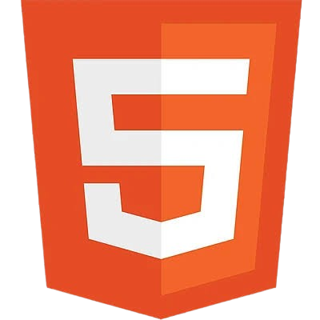
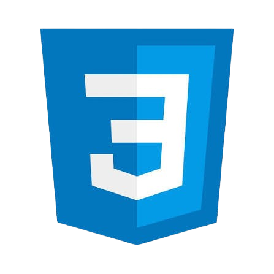
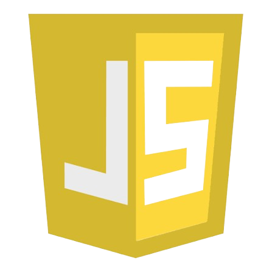
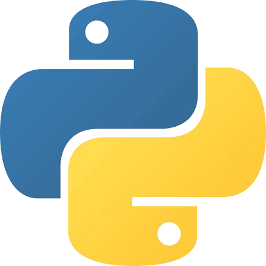
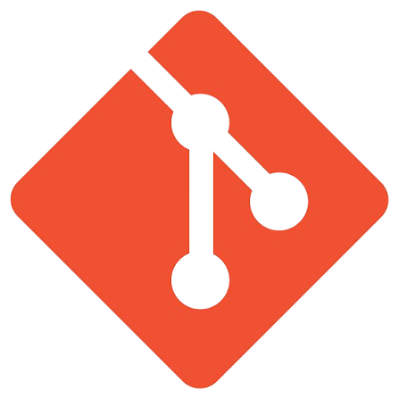

A HTML nyelvben felépítem a weboldal vázát, taglalom a szövegeket, bekezdéseket és címsorokat, valamint beillesztem a képeket, videókat és hivatkozásokat, hogy minden a helyére kerüljön.
Kiss Péter
Bemutatkozás
Sziasztok, Kis Péter vagyok, frontend fejlesztő és design rajongó.
Minden egy régi családi számítógéppel kezdődött, ahol órákig néztem a weboldalak forráskódját.
A kíváncsiságom hamar csillapíthatatlan szenvedéllyé vált az online alkotás iránt.
Az első bénácska HTML-oldalaktól hosszú út vezetett odáig, hogy ma már magabiztosan kódolok.
Természetesen számtalan éjszakát töltöttem el egy-egy makacs hiba keresésével és kijavításával.
Ezek a nehéz pillanatok tanítottak meg a kitartásra és a részletekre való odafigyelésre.
Ma már hiszem, hogy egy jól megírt felület képes valódi értéket és élményt teremteni.
Ha nem a képernyőt bámulom, gyakran egy könyvvel a kezemben vagy a várost járva találhatsz meg.
Célom olyan projekteken dolgozni, amelyek inspirálnak és amikkel nap mint nap fejlődhetek.
Ma már büszkén mondhatom, hogy a szenvedélyem a hivatásommá vált. Azért dolgozom ezen a területen, mert hiszek abban, hogy egy jól megírt kód és egy átgondolt, esztétikus felület képes valódi értéket teremteni, megkönnyíteni az emberek életét és élménnyé tenni a neten eltöltött időt. Minden új projekt egy tiszta lap számomra – egy újabb lehetőség arra, hogy valami egyedit alkossak, ami nemcsak funkcionális, de szép is.
Ha nem a képernyőt bámulom, vagy éppen egy újabb kódrészleten agyalok, akkor valószínűleg egy jó sci-fi könyvet olvasok egy kávézó zugában, vagy a várost járom a fényképezőgépemmel, ami segít kitisztítani a fejemet, és friss inspirációt ad a következő webes projekthez.
Lépjünk kapcsolatba, és alkossunk együtt valami maradandót a digitális térben!
Készségek

A HTML nyelvben felépítem a weboldal vázát, taglalom a szövegeket, bekezdéseket és címsorokat, valamint beillesztem a képeket, videókat és hivatkozásokat, hogy minden a helyére kerüljön.

A CSS stíluslapon keresztül életre keltem a dizájnt, formázom a színeket, tipográfiát és az elemek elrendezését, valamint reszponzívvá teszem az oldalt, hogy minden képernyőméreten tökéletesen mutasson.

A JavaScript segítségével interaktív funkciókat és dinamikus elemeket programozok a felületbe, kezelem a felhasználói eseményeket és a háttérfolyamatokat, hogy az oldal élővé és reszponzívvá váljon.

A Python nyelvben megírom a logikát, feldolgozom az adatokat és automatizálom a feladatokat, tiszta struktúrába rendezve a funkciókat, hogy a rendszer hatékonyan működjön.
Az SQL adatbázis-kezelővel lekérdezem, szűröm és módosítom a táblákban tárolt adatokat, kapcsolatokat hozok létre az entitások között, hogy az információk pontosan és gyorsan elérhetők legyenek.

A Git verziókövetővel nyomon követem a kód változásait, külön ágakon kezelem az új funkciókat, és összehangolom a módosításokat, hogy biztonságosan épüljön fel a projekt története.
Projectek
Ez a projekt a backend szolgáltatások és API-k automatizált, valamint manuális tesztelését mutatja be.
A célom az volt, hogy biztosítsam a végpontok (endpoints) megfelelő működését, biztonságát, válaszidejét és adatkonzisztenciáját, szimulálva a valós felhasználói forgatókönyveket.
A projekt célja egy skálázható, robusztus és karbantartható tesztautomatizálási keretrendszer kiépítése volt a nulláról, amely minimalizálja a manuális tesztelési erőfeszítéseket, és felgyorsítja a kiadási (release) ciklusokat.
A rendszer integrálódik a CI/CD folyamatokba, biztosítva a folyamatos minőségellenőrzést minden egyes kódmódosításnál.
Ebben a projektben egy natív mobilalkalmazás teljes körű minőségbiztosítási (QA) folyamatát vezettem végig iOS és Android platformokon.
A cél az volt, hogy biztosítsam az alkalmazás stabil működését, a kiváló felhasználói élményt (UX), valamint a kritikus hibák kiszűrését a piaci bevezetés (release) előtt.